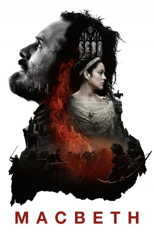

#3101 Macbeth
 
 IMDB-Wertung: 6.6 / 10
IMDB-Wertung: 6.6 / 10  Metascore: 71
Metascore: 71 
Als Anführer der schottischen Streitkräfte kann Macbeth (Michael Fassbender) im Mittelalter einen brutalen Triumph nach dem anderen auf dem Schlachtfeld einheimsen. Dabei steigt er stetig in der Gunst seines Königs Duncan (David Thewlis). Als er nach einem besonders bedeutenden Sieg von drei geheimnisvollen Frauen jedoch vorhergesagt bekommt, dass er eines Tages König von Schottland wird, und ihn seine machthungrige Frau Lady Macbeth (Marion Cotillard) energisch anstachelt, diese Prophezeiung mit allen Mitteln wahr werden zu lassen, ringt sich Macbeth schließlich dazu durch, Duncan zu töten, um selbst auf dem Thron Platz zu nehmen. Begleitet vom wachsenden Misstrauen seines engen Freundes Banquo (Paddy Considine), scheint Macbeth zunehmend dem Größenwahn zu verfallen. Doch macht er sich dabei auch zahlreiche Feinde, sodass sich schon bald Duncans Sohn Malcolm (Jack Reynor) mit Macbeths größtem Kontrahenten Macduff (Sean Harris) zusammentut, um den tyrannischen neuen König zu stürzen.
Jahr: 2015
Dauer: 112 Minuten
FSK: 12
Land: England Studio: StudioCanalTonspuren: DTS - ,
Untertitel: Englisch, Deutsch,
Auflösung: 1080p (1920x808) Größe: 9052 MB
Genre: Drama, Krieg
Regisseur: Justin Kurzel
Drehbuch: Todd Louiso, Jacob Koskoff, Michael Lesslie, William Shakespeare
Soundtrack: Jed Kurzel
Darsteller:
 Michael Fassbender als Macbeth
Michael Fassbender als Macbeth Marion Cotillard als Lady Macbeth
Marion Cotillard als Lady Macbeth Paddy Considine als Banquo
Paddy Considine als Banquo- Lynn Kennedy als Middle-Aged Witch
- Seylan Baxter als Older Witch
- Scot Greenan als Young Boy Soldier
 David Thewlis als Duncan
David Thewlis als Duncan David Hayman als Lennox
David Hayman als Lennox Jack Reynor als Malcolm
Jack Reynor als Malcolm- Brian Nickels als Thane of Cawdor
- James Harkness als Angus
- Ross Anderson als Rosse
 Sean Harris als Macduff
Sean Harris als Macduff Maurice Roëves als Menteith
Maurice Roëves als Menteith Elizabeth Debicki als Lady Macduff
Elizabeth Debicki als Lady Macduff- Eleanor Stagg als Macduff Child 1
- William Stagg als Macduff Child 2
- Matthew Stagg als Macduff Child 3
- Rebecca Benson als Maidservant
- Gerard Miller als Messenger
 Lasco Atkins als Macbeth Soldier , uncredited
Lasco Atkins als Macbeth Soldier , uncredited Nick Donald als Macbeth Soldier , uncredited
Nick Donald als Macbeth Soldier , uncredited- Charlotte Dunnico als Villager 12 , uncredited
- Paul Ellard als Scottish Soldier , uncredited
- Sam Exley als English Soldier , uncredited
 Dino Fazzani als Macbeth Solider , uncredited
Dino Fazzani als Macbeth Solider , uncredited- Rod Glenn als Macbeth's Soldier , uncredited
- Che Grant als English Soldier , uncredited
 Vera Horton als Villager , uncredited
Vera Horton als Villager , uncredited Cristian Lazar als English Soldier , uncredited
Cristian Lazar als English Soldier , uncredited Keith Lomas als English Soldier , uncredited
Keith Lomas als English Soldier , uncredited- Harry Spencer-Phillips als Young Boy Soldier , uncredited
 Daniel Westwood als Special Action Soldier , uncredited
Daniel Westwood als Special Action Soldier , uncredited- Jack Madigan als Macbeth Child
- Frank Madigan als Macbeth Child
- Lochlann Harris als Fleance
- Kayla Fallon als Young Witch
- Amber Rissmann als Child Witch
- Hilton McRae als Macdonwald
- Scott Dymond als Seyton
- Andrew Gourlay als Ghost Soldier
- Roy Sampson als Doctor
- Phil Lonergan als Masked Attacker
- Stewart Bailey als Macbeth Soldier , uncredited
- Alex Claus als Macbeth Soldier , uncredited
- Martin Crossingham als Norwegian Soldier , uncredited
- Robert Dukes als Norwegian Soldier , uncredited
- Valeria Dundere als Villager , uncredited
- Mike Firth als Macbeth Soldier , uncredited
- Robert J. Fraser als Macbeth Soldier , uncredited
Datei: X:\2015(G-M)\Macbeth (2015, FSK12, 1920x808).mkv seit 26.01.2016
Festplatte: HD 2015(A-Z)
 Es gibt insgesamt 129 Filme in der Gruppe '2015(G-M)'
Es gibt insgesamt 129 Filme in der Gruppe '2015(G-M)'